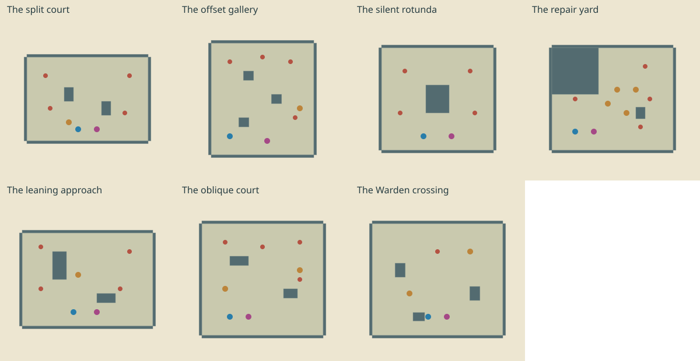
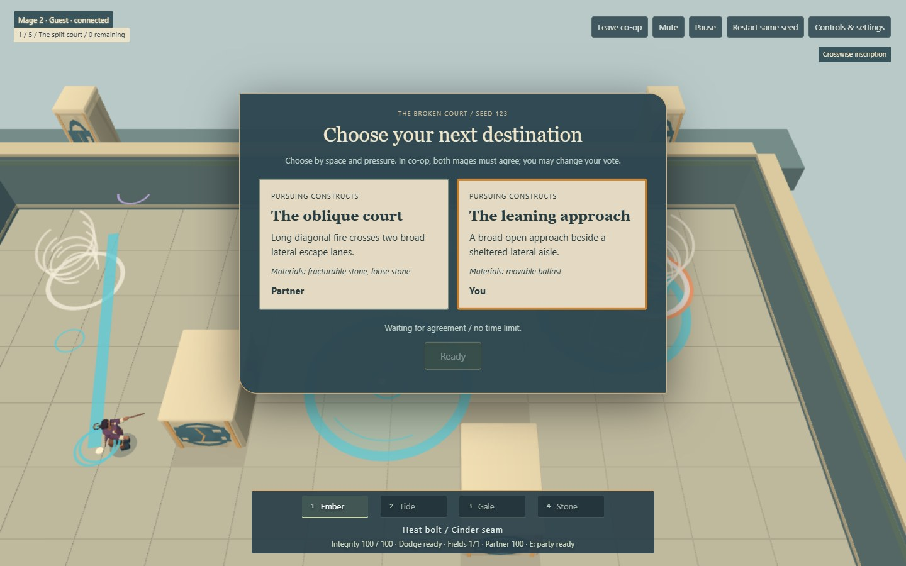
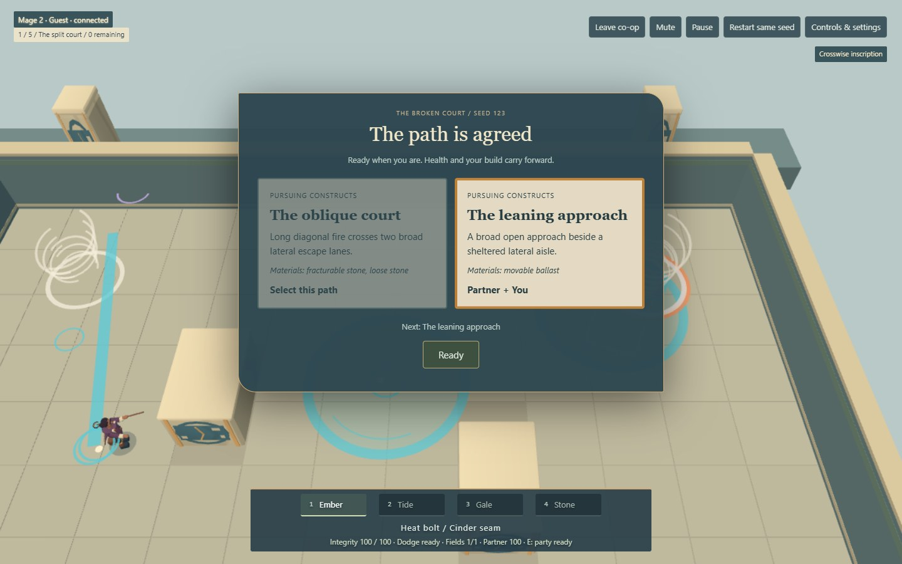

Play Ruinweavers · Previous fixed route · Spatial Design evidence
One court complex. Different paths.
Four ordinary fights, three personal upgrades, three shared forks, one Bound Warden. No generated walls and no additional enemies. The host owns the seeded route; two mages agree before moving on.
The authored room pool

Blue/rose: player starts. Red: spawn anchors. Ochre: material props. Leaning approach and Oblique court are the two new spaces. The old rejected vertical/gap studies remain diagnostics.
Same seed, different choices
Generator 2, seed 123, left forks: The split court → The oblique court → The silent rotunda → The repair yard → Warden crossing
Right forks: The split court → The leaning approach → The oblique court → The offset gallery → Warden crossing

Actual local WebRTC clients: each mage has a different vote. Combat waits for agreement.
Agreement locks one destination; both still ready to begin.Actual gameplay
Recorded real keyboard/mouse input with active enemies. Local Chrome/Intel UHD; recording affects frame cost. No concept imagery.
Spatial diagnostic traces
Same delayed-observation field policies; blue/rose paths and purple field placements. These show opportunities and possible blind spots, not a layout score or human skill.
What is and is not proved
5,000 seeds / 40,000 paths checked; no repeats or malformed endings. Ninety matched synthetic runs completed. Base unupgraded room probes also completed both new rooms. Real solo and two-client runs exercise personal rewards and route agreement. Basin/Ember remains strong; no spell/Guardian tuning was changed.
Checkpoint schema 1 stores seed, visited path, builds, health and boundary choices only. Restore rebuilds an encounter; it is not mid-combat physics migration. Cloud persistence, reconnect, host leases and hosted signaling are not implemented.